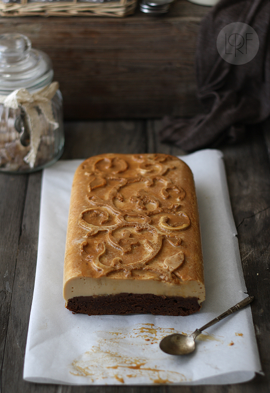
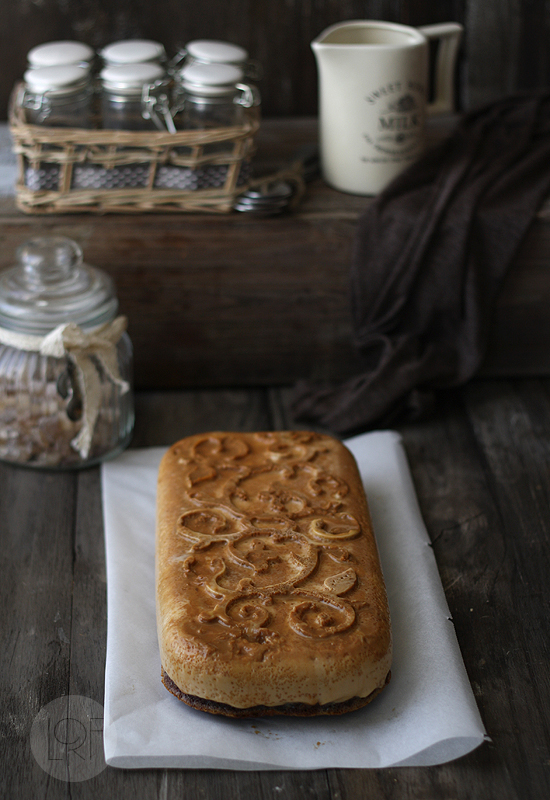
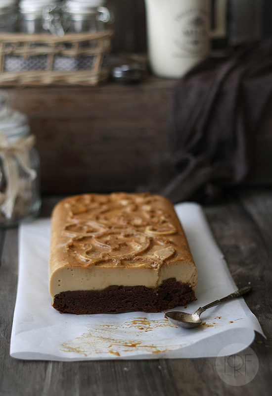

{kind=link}
Impossible Cake! A
brownie cake baked with flanon the top. It is a popular recipe in Mexico and, despite the “impossible cake” alias, chocoflan is very easy to make at home.
To make chocoflan, or
impossible cake, we pour a layer of brownie batter into a greased pan, and then ladle in a layer of flan. The cake is baked in a hot water bath, and these layers invert during baking.
I have tried baking my impossible cake in a number of cake pans: square, rectangular, circular, bundt pans,... But in any case, the hot water bath is extremely important, if the water is not hot the layers will not invert. The cake should also be allowed to cool completely before unmolding, and it should be kept refrigerated.
The blending of dulce de leche (or cajeta), vanilla flan, and dense chocolate brownie is simply delicious!
{kind=link}

{kind=link}

Impossible cake
Directions: Prep time20 min
Cooking time: 45-60 min
Serves: 12
Ingredients
- Brownie
- 7 oz bittersweet chocolate, chopped (200 g)
- 1 stick butter, room temperature (125 g)
- 3 large eggs
- 1 cup granulated sugar
- 1 pinch of salt
- 1 cup all-purpose flour
- 3 Tbls unsweetened cocoa powder
- Flan
- 3 tbs dulce de leche (or cajeta, optional)
- 4 eggs
- 200 ml sweetened condensed milk (4/5 cup)
- 400 ml milk (1 and 3/5 cup)
- 1 tsp vanilla
- Mold
- I used this one by Silikomart
- Preheat oven to 350 º F (180 ºC), and grease mold
- Pour dulce de leche in the bottom of your baking pan. Place your mold in larger pan. Add enough boiing water water to larger pan to come halfway up side of your baking pan.
- Prepare the brownie batter. Put the chocolate and butter in a medium heatproof bowl and set over a pan of simmering water, or melt in the microwave Melt the chocolate and butter, stirring occasionally until smooth. Remove from heat and set aside to cool. In another medium bowl whisk together the eggs and sugar at low-medium speed until combined. Whisk the warm chocolate mixture into the egg mixture. Stir in the flour, salt and cocoa powder with a wooden spoon until just combined. Pour brownie mixture into the mold
- Prepare the flan mixture. Place the eggs, vanilla, milk and sweetened condensed milk in a blender and puree until smooth. Pour the flan mixture on top of the brownie mixture. Cover pan with foil sprayed with cooking spray, sprayed-side down.
- Place in the oven and bake for about 45 to 60 minutes, depending on your mold. Last 15 minutes, cook uncovered.
- Remove from the oven, and once cool, refrigerate at least 12 hours before unmolding and eating.
Directions:
- Dulce de leche is optional. You might use caramel sauce instead, or nothing at all.
- If you have prepared this recipe, and want to send me a pic and your comments, please use this form . If you wish to subscribe to receive my recipes in English please do it here